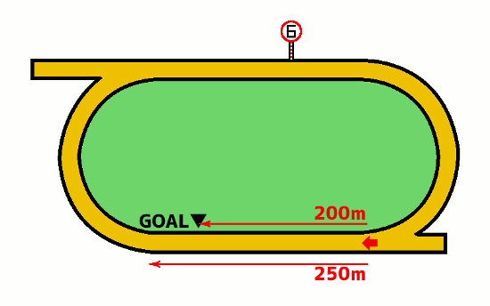

無料メルマガで連日の無料予想と秋G1の極秘情報もGETしよう!!
無料メルマガ登録フォーム
最終更新日：
YouTubeで登録者数6万人のうまめし競馬チャンネルを運営しているうまめし君です！
佐賀競馬場の1300mコースの特徴を分析して、競馬予想に役立つ傾向を調べてみたいと思います。佐賀1300mコースは馬場1周と最後の直線200mの右回りで、高低差は1mあるそうですがパッと見は殆どわかりません。
もくじ
競馬場特徴の一覧に戻る
札幌 函館 福島 新潟 東京 中山 中京 京都 阪神 小倉 地方 海外
無料メルマガで連日の無料予想と秋G1の極秘情報もGETしよう!!
無料メルマガ登録フォーム
無料メルマガで連日の無料予想と秋G1の極秘情報もGETしよう!!
無料メルマガ登録フォーム
佐賀ダ1300mコースでの枠順と脚質別の成績を見ていきましょう。
1枠の成績は（1着117回・2着124回・3着140回・着外955回）で、勝率は8パーセント・連対率は18パーセント・複勝率は28パーセントとなっています。 逃げ警戒
脚質別の馬券に絡むパーセンテージは逃げ：58％・先行：37％・差し：18％・追込：6％となっております。
2枠の成績は（1着130回・2着133回・3着127回・着外946回）で、勝率は9パーセント・連対率は19パーセント・複勝率は29パーセントとなっています。 逃げ警戒
脚質別の馬券に絡むパーセンテージは逃げ：53％・先行：36％・差し：21％・追込：10％となっております。
3枠の成績は（1着132回・2着108回・3着141回・着外955回）で、勝率は9パーセント・連対率は17パーセント・複勝率は28パーセントとなっています。 逃げ警戒
脚質別の馬券に絡むパーセンテージは逃げ：55％・先行：38％・差し：18％・追込：9％となっております。
4枠の成績は（1着127回・2着140回・3着132回・着外937回）で、勝率は9パーセント・連対率は19パーセント・複勝率は29パーセントとなっています。 逃げ警戒
脚質別の馬券に絡むパーセンテージは逃げ：62％・先行：41％・差し：18％・追込：5％となっております。
5枠の成績は（1着162回・2着148回・3着142回・着外1174回）で、勝率は9パーセント・連対率は19パーセント・複勝率は27パーセントとなっています。 逃げ警戒
脚質別の馬券に絡むパーセンテージは逃げ：61％・先行：39％・差し：19％・追込：5％となっております。
6枠の成績は（1着167回・2着199回・3着181回・着外1492回）で、勝率は8パーセント・連対率は17パーセント・複勝率は26パーセントとなっています。 逃げ警戒
脚質別の馬券に絡むパーセンテージは逃げ：53％・先行：38％・差し：18％・追込：5％となっております。
7枠の成績は（1着249回・2着222回・3着240回・着外1662回）で、勝率は10パーセント・連対率は19パーセント・複勝率は29パーセントとなっています。 逃げ警戒 道悪実績
脚質別の馬券に絡むパーセンテージは逃げ：59％・先行：42％・差し：20％・追込：7％となっております。
8枠の成績は（1着254回・2着258回・3着230回・着外1768回）で、勝率は10パーセント・連対率は20パーセント・複勝率は29パーセントとなっています。 逃げ警戒
脚質別の馬券に絡むパーセンテージは逃げ：65％・先行：38％・差し：16％・追込：4％となっております。
下の表は枠を考慮しない脚質成績
| 逃げ | 先行 | 差し | 追込 | |
|---|---|---|---|---|
| 勝 率 | 29% | 12% | 4% | 1% |
| 連対率 | 46% | 26% | 10% | 3% |
| 複勝率 | 58% | 39% | 18% | 6% |

スタート地点は4コーナー側のホームストレッチ始点部分で、そこから最初のコーナーまで250メートルあります。スタート後は外枠の馬が内に切れ込んで来て、内枠の馬は窮屈な競馬を強いられるため外枠の方が有利な傾向があります。
レース動画を見ていればわかりますが、佐賀競馬では馬場の内側の砂が深くなっているため、内ラチからかなり距離を取って走ります。外枠の先行馬がインに寄せて来た時に必然的に内枠の先行力の無い馬は引き下がるか、砂の深いところを走って抵抗するかの2択になり、どちらにしても大きく不利を被ります。
佐賀競馬場の1300mコースは基本的に前半の下級レースで使用され、6レース以降に組まれる事はまず無いのですが、佐賀競馬全体の3割がこの1300mコースを使う競走ですし、1日の前半に使われるという事は、後半レースのための軍資金にも影響する重要なコースです。
無料メルマガで連日の無料予想と秋G1の極秘情報もGETしよう!!
無料メルマガ登録フォーム
佐賀ダ1300mコースでの人気別の成績を見ていきましょう。
1番人気の成績は（1着622回・2着296回・3着144回・着外272回）で、勝率は46パーセント・連対率は68パーセント・複勝率79パーセントとなっています。
脚質別の馬券に絡むパーセンテージは逃げ：90％・先行：80％・差し：67％・追込：60％となっております。
2番人気の成績は（1着291回・2着294回・3着240回・着外509回）で、勝率は21パーセント・連対率は43パーセント・複勝率61パーセントとなっています。
脚質別の馬券に絡むパーセンテージは逃げ：75％・先行：65％・差し：47％・追込：36％となっております。
3番人気の成績は（1着145回・2着210回・3着253回・着外727回）で、勝率は10パーセント・連対率は26パーセント・複勝率45パーセントとなっています。
脚質別の馬券に絡むパーセンテージは逃げ：61％・先行：50％・差し：34％・追込：23％となっております。
4番人気の成績は（1着102回・2着168回・3着195回・着外871回）で、勝率は7パーセント・連対率は20パーセント・複勝率34パーセントとなっています。
脚質別の馬券に絡むパーセンテージは逃げ：54％・先行：40％・差し：25％・追込：13％となっております。
5番人気の成績は（1着72回・2着122回・3着152回・着外987回）で、勝率は5パーセント・連対率は14パーセント・複勝率25パーセントとなっています。
脚質別の馬券に絡むパーセンテージは逃げ：47％・先行：30％・差し：20％・追込：12％となっております。
6番人気の成績は（1着41回・2着101回・3着108回・着外1075回）で、勝率は3パーセント・連対率は10パーセント・複勝率18パーセントとなっています。
脚質別の馬券に絡むパーセンテージは逃げ：34％・先行：21％・差し：17％・追込：7％となっております。
7番人気の成績は（1着36回・2着59回・3着99回・着外1125回）で、勝率は2パーセント・連対率は7パーセント・複勝率14パーセントとなっています。
脚質別の馬券に絡むパーセンテージは逃げ：31％・先行：17％・差し：12％・追込：5％となっております。
8番人気の成績は（1着11回・2着37回・3着62回・着外1176回）で、勝率は0パーセント・連対率は3パーセント・複勝率8パーセントとなっています。
脚質別の馬券に絡むパーセンテージは逃げ：12％・先行：13％・差し：7％・追込：2％となっております。
短距離コースと言えども、佐賀競馬の下っ端の馬ともなると、着差が6馬身だの8馬身だのと大差の競馬になることも珍しくありません。向正面の時点で先頭と最後尾で30馬身ほどの差ができるほどです。
そんな下級条件の馬のレースでしか使われないため、下位人気馬に上位人気馬を倒せる要素が少なく、まず後方にいる差し馬・追い込み馬の出番はありません。だから上位人気の馬が順当に勝ちやすいです。
佐賀1300mコースが使用されるのは2歳戦・3歳戦・C2戦が殆どなのですが、2歳3歳のレースの方が少しだけ単勝1番人気の勝率が良く（微差です）、回収率もC2の古馬戦よりは年齢限定レースの方が高い傾向があります。
ただ、人気の傾向はコースの特性によるものではなく、出走馬の質によるところが大きいので、今後佐賀競馬の方針が変わって、上級クラスでも頻繁に1300mコースを使用するようになった場合には、この傾向が変わって来る事は覚えておいてください。
無料メルマガで連日の無料予想と秋G1の極秘情報もGETしよう!!
無料メルマガ登録フォーム
佐賀ダ1300コースでの騎手成績を詳細に見ていきましょう。
山口勲騎手の成績は147-103-68-308で、1~4番人気での成績は144-96-62-184で、5番人気以下の人気薄での騎乗成績は3-7-6-124でした。
飛田愛騎手の成績は145-123-100-495で、1~4番人気での成績は136-103-77-218で、5番人気以下の人気薄での騎乗成績は9-20-23-277でした。
石川慎騎手の成績は123-119-96-409で、1~4番人気での成績は113-99-76-158で、5番人気以下の人気薄での騎乗成績は10-20-20-251でした。
山田貴騎手の成績は112-67-68-446で、1~4番人気での成績は106-54-48-172で、5番人気以下の人気薄での騎乗成績は6-13-20-274でした。
出水拓騎手の成績は74-84-87-623で、1~4番人気での成績は59-57-52-140で、5番人気以下の人気薄での騎乗成績は15-27-35-483でした。
山下裕騎手の成績は69-72-66-483で、1~4番人気での成績は58-49-44-120で、5番人気以下の人気薄での騎乗成績は11-23-22-363でした。
田中直騎手の成績は65-74-72-533で、1~4番人気での成績は55-45-40-115で、5番人気以下の人気薄での騎乗成績は10-29-32-418でした。
竹吉徹騎手の成績は64-66-89-498で、1~4番人気での成績は50-49-53-133で、5番人気以下の人気薄での騎乗成績は14-17-36-365でした。
加茂飛騎手の成績は61-53-84-623で、1~4番人気での成績は54-38-40-117で、5番人気以下の人気薄での騎乗成績は7-15-44-506でした。
倉富隆騎手の成績は54-36-37-238で、1~4番人気での成績は45-31-27-67で、5番人気以下の人気薄での騎乗成績は9-5-10-171でした。
川島拓騎手の成績は50-80-83-611で、1~4番人気での成績は42-60-43-114で、5番人気以下の人気薄での騎乗成績は8-20-40-497でした。
金山昇騎手の成績は49-69-65-599で、1~4番人気での成績は36-42-42-136で、5番人気以下の人気薄での騎乗成績は13-27-23-463でした。
中山蓮騎手の成績は41-54-47-578で、1~4番人気での成績は32-31-19-100で、5番人気以下の人気薄での騎乗成績は9-23-28-478でした。
石川倭騎手の成績は39-27-21-61で、1~4番人気での成績は39-24-19-40で、5番人気以下の人気薄での騎乗成績は0-3-2-21でした。
田中純騎手の成績は37-47-47-400で、1~4番人気での成績は30-38-27-81で、5番人気以下の人気薄での騎乗成績は7-9-20-319でした。
長田進騎手の成績は36-61-43-499で、1~4番人気での成績は26-33-21-78で、5番人気以下の人気薄での騎乗成績は10-28-22-421でした。
村松翔騎手の成績は29-30-34-297で、1~4番人気での成績は23-23-15-43で、5番人気以下の人気薄での騎乗成績は6-7-19-254でした。
小松丈騎手の成績は27-26-41-420で、1~4番人気での成績は23-15-25-60で、5番人気以下の人気薄での騎乗成績は4-11-16-360でした。
青海大騎手の成績は24-38-43-561で、1~4番人気での成績は20-19-18-73で、5番人気以下の人気薄での騎乗成績は4-19-25-488でした。
小林凌騎手の成績は14-6-7-126で、1~4番人気での成績は11-1-2-19で、5番人気以下の人気薄での騎乗成績は3-5-5-107でした。
吉本隆騎手の成績は10-15-14-103で、1~4番人気での成績は5-6-6-17で、5番人気以下の人気薄での騎乗成績は5-9-8-86でした。
合林海騎手の成績は9-13-15-290で、1~4番人気での成績は6-8-8-34で、5番人気以下の人気薄での騎乗成績は3-5-7-256でした。
及川烈騎手の成績は5-5-3-64で、1~4番人気での成績は5-3-0-8で、5番人気以下の人気薄での騎乗成績は0-2-3-56でした。
渡邊竜騎手の成績は3-1-1-1で、1~4番人気での成績は3-1-0-1で、5番人気以下の人気薄での騎乗成績は0-0-1-0でした。
松井伸騎手の成績は3-5-8-63で、1~4番人気での成績は1-2-5-13で、5番人気以下の人気薄での騎乗成績は2-3-3-50でした。
山本咲騎手の成績は3-0-2-6で、1~4番人気での成績は2-0-1-3で、5番人気以下の人気薄での騎乗成績は1-0-1-3でした。
和田譲騎手の成績は2-0-1-0で、1~4番人気での成績は2-0-1-0で、5番人気以下の人気薄での騎乗成績は0-0-0-0でした。
塚本征騎手の成績は1-0-0-0で、1~4番人気での成績は1-0-0-0で、5番人気以下の人気薄での騎乗成績は0-0-0-0でした。
長尾翼騎手の成績は1-0-2-16で、1~4番人気での成績は1-0-1-3で、5番人気以下の人気薄での騎乗成績は0-0-1-13でした。
長谷駿騎手の成績は1-2-1-4で、1~4番人気での成績は1-2-1-0で、5番人気以下の人気薄での騎乗成績は0-0-0-4でした。
張田昂騎手の成績は1-0-0-0で、1~4番人気での成績は1-0-0-0で、5番人気以下の人気薄での騎乗成績は0-0-0-0でした。
大畑雅騎手の成績は1-0-0-0で、1~4番人気での成績は0-0-0-0で、5番人気以下の人気薄での騎乗成績は1-0-0-0でした。
大山真騎手の成績は1-0-1-6で、1~4番人気での成績は1-0-1-1で、5番人気以下の人気薄での騎乗成績は0-0-0-5でした。
多田誠騎手の成績は1-0-0-1で、1~4番人気での成績は1-0-0-0で、5番人気以下の人気薄での騎乗成績は0-0-0-1でした。
川須栄騎手の成績は1-0-0-0で、1~4番人気での成績は1-0-0-0で、5番人気以下の人気薄での騎乗成績は0-0-0-0でした。
川原正騎手の成績は1-0-0-1で、1~4番人気での成績は1-0-0-0で、5番人気以下の人気薄での騎乗成績は0-0-0-1でした。
西森将騎手の成績は1-3-3-50で、1~4番人気での成績は0-3-0-4で、5番人気以下の人気薄での騎乗成績は1-0-3-46でした。
山本聡騎手の成績は1-1-0-3で、1~4番人気での成績は1-1-0-1で、5番人気以下の人気薄での騎乗成績は0-0-0-2でした。
桑村真騎手の成績は1-0-0-1で、1~4番人気での成績は1-0-0-1で、5番人気以下の人気薄での騎乗成績は0-0-0-0でした。
魚住謙騎手の成績は1-1-2-18で、1~4番人気での成績は1-1-0-1で、5番人気以下の人気薄での騎乗成績は0-0-2-17でした。
宮内勇騎手の成績は1-5-5-17で、1~4番人気での成績は1-2-5-1で、5番人気以下の人気薄での騎乗成績は0-3-0-16でした。
吉村智騎手の成績は1-0-0-4で、1~4番人気での成績は1-0-0-4で、5番人気以下の人気薄での騎乗成績は0-0-0-0でした。
鴨宮祥騎手の成績は1-0-0-1で、1~4番人気での成績は1-0-0-0で、5番人気以下の人気薄での騎乗成績は0-0-0-1でした。
下原理騎手の成績は1-0-0-7で、1~4番人気での成績は1-0-0-2で、5番人気以下の人気薄での騎乗成績は0-0-0-5でした。
永井孝騎手の成績は1-0-1-0で、1~4番人気での成績は1-0-1-0で、5番人気以下の人気薄での騎乗成績は0-0-0-0でした。
澤田龍騎手の成績は0-0-0-3で、1~4番人気での成績は0-0-0-2で、5番人気以下の人気薄での騎乗成績は0-0-0-1でした。
櫻井光騎手の成績は0-0-0-1で、1~4番人気での成績は0-0-0-1で、5番人気以下の人気薄での騎乗成績は0-0-0-0でした。
林謙佑騎手の成績は0-0-0-1で、1~4番人気での成績は0-0-0-0で、5番人気以下の人気薄での騎乗成績は0-0-0-1でした。
落合玄騎手の成績は0-0-0-2で、1~4番人気での成績は0-0-0-1で、5番人気以下の人気薄での騎乗成績は0-0-0-1でした。
矢野貴騎手の成績は0-1-0-0で、1~4番人気での成績は0-1-0-0で、5番人気以下の人気薄での騎乗成績は0-0-0-0でした。
野畑凌騎手の成績は0-0-1-1で、1~4番人気での成績は0-0-1-1で、5番人気以下の人気薄での騎乗成績は0-0-0-0でした。
木之葵騎手の成績は0-0-0-2で、1~4番人気での成績は0-0-0-0で、5番人気以下の人気薄での騎乗成績は0-0-0-2でした。
服部茂騎手の成績は0-0-0-1で、1~4番人気での成績は0-0-0-0で、5番人気以下の人気薄での騎乗成績は0-0-0-1でした。
藤本現騎手の成績は0-0-0-1で、1~4番人気での成績は0-0-0-1で、5番人気以下の人気薄での騎乗成績は0-0-0-0でした。
藤原幹騎手の成績は0-0-0-1で、1~4番人気での成績は0-0-0-0で、5番人気以下の人気薄での騎乗成績は0-0-0-1でした。
筒井勇騎手の成績は0-0-1-0で、1~4番人気での成績は0-0-1-0で、5番人気以下の人気薄での騎乗成績は0-0-0-0でした。
渡瀬和騎手の成績は0-0-0-6で、1~4番人気での成績は0-0-0-2で、5番人気以下の人気薄での騎乗成績は0-0-0-4でした。
中田貴騎手の成績は0-0-0-1で、1~4番人気での成績は0-0-0-0で、5番人気以下の人気薄での騎乗成績は0-0-0-1でした。
大山龍騎手の成績は0-0-0-1で、1~4番人気での成績は0-0-0-1で、5番人気以下の人気薄での騎乗成績は0-0-0-0でした。
浅野皓騎手の成績は0-0-0-1で、1~4番人気での成績は0-0-0-0で、5番人気以下の人気薄での騎乗成績は0-0-0-1でした。
川端海騎手の成績は0-1-1-1で、1~4番人気での成績は0-0-0-0で、5番人気以下の人気薄での騎乗成績は0-1-1-1でした。
赤岡修騎手の成績は0-0-0-1で、1~4番人気での成績は0-0-0-1で、5番人気以下の人気薄での騎乗成績は0-0-0-0でした。
石堂響騎手の成績は0-1-0-4で、1~4番人気での成績は0-0-0-1で、5番人気以下の人気薄での騎乗成績は0-1-0-3でした。
菅原辰騎手の成績は0-0-0-2で、1~4番人気での成績は0-0-0-2で、5番人気以下の人気薄での騎乗成績は0-0-0-0でした。
杉浦健騎手の成績は0-0-0-1で、1~4番人気での成績は0-0-0-0で、5番人気以下の人気薄での騎乗成績は0-0-0-1でした。
神尾香騎手の成績は0-0-0-1で、1~4番人気での成績は0-0-0-0で、5番人気以下の人気薄での騎乗成績は0-0-0-1でした。
新庄海騎手の成績は0-0-0-2で、1~4番人気での成績は0-0-0-0で、5番人気以下の人気薄での騎乗成績は0-0-0-2でした。
城野慈騎手の成績は0-0-0-1で、1~4番人気での成績は0-0-0-0で、5番人気以下の人気薄での騎乗成績は0-0-0-1でした。
上田将騎手の成績は0-0-0-2で、1~4番人気での成績は0-0-0-0で、5番人気以下の人気薄での騎乗成績は0-0-0-2でした。
松木大騎手の成績は0-0-0-1で、1~4番人気での成績は0-0-0-0で、5番人気以下の人気薄での騎乗成績は0-0-0-1でした。
小牧太騎手の成績は0-0-0-2で、1~4番人気での成績は0-0-0-2で、5番人気以下の人気薄での騎乗成績は0-0-0-0でした。
山本太騎手の成績は0-0-1-0で、1~4番人気での成績は0-0-1-0で、5番人気以下の人気薄での騎乗成績は0-0-0-0でした。
山崎雅騎手の成績は0-0-0-2で、1~4番人気での成績は0-0-0-0で、5番人気以下の人気薄での騎乗成績は0-0-0-2でした。
笹川翼騎手の成績は0-0-0-3で、1~4番人気での成績は0-0-0-2で、5番人気以下の人気薄での騎乗成績は0-0-0-1でした。
坂井瑛騎手の成績は0-0-0-1で、1~4番人気での成績は0-0-0-1で、5番人気以下の人気薄での騎乗成績は0-0-0-0でした。
佐々世騎手の成績は0-0-0-1で、1~4番人気での成績は0-0-0-0で、5番人気以下の人気薄での騎乗成績は0-0-0-1でした。
佐々志騎手の成績は0-0-0-1で、1~4番人気での成績は0-0-0-0で、5番人気以下の人気薄での騎乗成績は0-0-0-1でした。
今村聖騎手の成績は0-0-0-1で、1~4番人気での成績は0-0-0-1で、5番人気以下の人気薄での騎乗成績は0-0-0-0でした。
高橋愛騎手の成績は0-3-1-5で、1~4番人気での成績は0-3-0-1で、5番人気以下の人気薄での騎乗成績は0-0-1-4でした。
宮下瞳騎手の成績は0-0-2-1で、1~4番人気での成績は0-0-2-1で、5番人気以下の人気薄での騎乗成績は0-0-0-0でした。
吉留孝騎手の成績は0-0-0-1で、1~4番人気での成績は0-0-0-0で、5番人気以下の人気薄での騎乗成績は0-0-0-1でした。
吉原寛騎手の成績は0-0-0-3で、1~4番人気での成績は0-0-0-3で、5番人気以下の人気薄での騎乗成績は0-0-0-0でした。
岩橋勇騎手の成績は0-0-0-2で、1~4番人気での成績は0-0-0-1で、5番人気以下の人気薄での騎乗成績は0-0-0-1でした。
丸野勝騎手の成績は0-0-1-1で、1~4番人気での成績は0-0-1-0で、5番人気以下の人気薄での騎乗成績は0-0-0-1でした。
関本玲騎手の成績は0-0-0-1で、1~4番人気での成績は0-0-0-0で、5番人気以下の人気薄での騎乗成績は0-0-0-1でした。
岡村健騎手の成績は0-0-2-1で、1~4番人気での成績は0-0-0-0で、5番人気以下の人気薄での騎乗成績は0-0-2-1でした。
塩津璃騎手の成績は0-0-0-2で、1~4番人気での成績は0-0-0-0で、5番人気以下の人気薄での騎乗成績は0-0-0-2でした。
井上幹騎手の成績は0-0-0-2で、1~4番人気での成績は0-0-0-1で、5番人気以下の人気薄での騎乗成績は0-0-0-1でした。
井上瑛騎手の成績は0-0-0-1で、1~4番人気での成績は0-0-0-0で、5番人気以下の人気薄での騎乗成績は0-0-0-1でした。
阿部龍騎手の成績は0-0-0-2で、1~4番人気での成績は0-0-0-2で、5番人気以下の人気薄での騎乗成績は0-0-0-0でした。
どの種牡馬の産駒がどの程度馬券に絡んでいるのか、種牡馬ごとに馬券に絡んだ回数をカウントしたのが以下の表です。血統の系統別に馬名を色分けしています。
■ヘイルトゥリーズン系
■サンデーサイレンス系
■ミスプロ系・キングマンボ系
■ノーザンダンサー系
■エーピーインディ系
| 種牡馬名 | 勝利回数 |
|---|---|
| マジェスティックウォリアー | 34 |
| ドレフォン | 29 |
| ホッコータルマエ | 23 |
| ロードカナロア | 22 |
| リオンディーズ | 22 |
| ダノンレジェンド | 22 |
| ストロングリターン | 22 |
| モーリス | 20 |
| ビーチパトロール | 20 |
| ダンカーク | 19 |
| ヘニーヒューズ | 18 |
| ケイムホーム | 17 |
| ベストウォーリア | 16 |
| パイロ | 16 |
| ドゥラメンテ | 16 |
| シニスターミニスター | 16 |
| サトノアラジン | 16 |
| オルフェーヴル | 16 |
| ファインニードル | 15 |
| スマートファルコン | 15 |
| 種牡馬名 | 勝利回数 |
|---|---|
| マジェスティックウォリアー | 34 |
| ドレフォン | 29 |
| ホッコータルマエ | 23 |
| ロードカナロア | 22 |
| リオンディーズ | 22 |
| ダノンレジェンド | 22 |
| ストロングリターン | 22 |
| モーリス | 20 |
| ビーチパトロール | 20 |
| ダンカーク | 19 |
| ヘニーヒューズ | 18 |
| ケイムホーム | 17 |
| ベストウォーリア | 16 |
| パイロ | 16 |
| ドゥラメンテ | 16 |
| シニスターミニスター | 16 |
| サトノアラジン | 16 |
| オルフェーヴル | 16 |
| ファインニードル | 15 |
| スマートファルコン | 15 |
| ルーラーシップ | 14 |
| メイショウボーラー | 14 |
| サンダースノー | 14 |
| サトノクラウン | 14 |
| ゴールドシップ | 14 |
| ビッグアーサー | 13 |
| ダイワメジャー | 13 |
| タリスマニック | 13 |
| シルバーステート | 13 |
| シャンハイボビー | 12 |
| エスポワールシチー | 12 |
| アジアエクスプレス | 12 |
| ミッキーアイル | 11 |
| マクフィ | 11 |
| コパノリッキー | 11 |
| イスラボニータ | 11 |
| アメリカンペイトリオット | 11 |
| ヴィクトワールピサ | 10 |
| ロードバリオス | 10 |
| リアルスティール | 10 |
| バンブーエール | 10 |
| バゴ | 10 |
| ノヴェリスト | 10 |
| デクラレーションオブウォー | 10 |
| ワールドエース | 9 |
| モンテロッソ | 9 |
| ハーツクライ | 9 |
| ニューイヤーズデイ | 9 |
| スズカコーズウェイ | 9 |
| スクリーンヒーロー | 9 |
| ジャスタウェイ | 9 |
| クリエイター２ | 9 |
| キンシャサノキセキ | 9 |
| キタサンブラック | 9 |
| カレンブラックヒル | 9 |
| エイシンフラッシュ | 9 |
| フリオーソ | 8 |
| トゥザグローリー | 8 |
| ディープブリランテ | 8 |
| ザファクター | 8 |
| キズナ | 8 |
| カリフォルニアクローム | 8 |
| カジノドライヴ | 8 |
| エピファネイア | 8 |
| ロージズインメイ | 7 |
| レガーロ | 7 |
| ラブリーデイ | 7 |
| ラニ | 7 |
| ブラックタイド | 7 |
| フェノーメノ | 7 |
| バトルプラン | 7 |
| トゥザワールド | 7 |
| ディスクリートキャット | 7 |
| クラウンレガーロ | 7 |
| アドマイヤムーン | 7 |
| ヴィットリオドーロ | 6 |
| モズアスコット | 6 |
| モーニン | 6 |
| マインドユアビスケッツ | 6 |
| ベーカバド | 6 |
| トランセンド | 6 |
| トーセンラー | 6 |
| ダノンバラード | 6 |
| ジョーカプチーノ | 6 |
| サウスヴィグラス | 6 |
| クロフネ | 6 |
| エイシンヒカリ | 6 |
| ロゴタイプ | 5 |
| リアルインパクト | 5 |
| ミッキーロケット | 5 |
| ミッキーグローリー | 5 |
| マツリダゴッホ | 5 |
| ホークビル | 5 |
| トーセンジョーダン | 5 |
| タワーオブロンドン | 5 |
| ゼンノロブロイ | 5 |
| エスケンデレヤ | 5 |
| ヘニーハウンド | 4 |
| ブリックスアンドモルタル | 4 |
| ノーブルミッション | 4 |
| トビーズコーナー | 4 |
| ディーマジェスティ | 4 |
| テイエムジンソク | 4 |
| タニノギムレット | 4 |
| シビルウォー | 4 |
| コパノリチャード | 4 |
| グランプリボス | 4 |
| アイルハヴアナザー | 4 |
| ロジャーバローズ | 3 |
| ローエングリン | 3 |
| リーチザクラウン | 3 |
| ベルシャザール | 3 |
| フサイチセブン | 3 |
| ネロ | 3 |
| ニホンピロアワーズ | 3 |
| ニシケンモノノフ | 3 |
| ドリームジャーニー | 3 |
| トウケイヘイロー | 3 |
| ダノンシャンティ | 3 |
| タートルボウル | 3 |
| スウェプトオーヴァーボード | 3 |
| ゴールドアクター | 3 |
| キングカメハメハ | 3 |
| エピカリス | 3 |
| エーシントップ | 3 |
| アレスバローズ | 3 |
| アルアイン | 3 |
| アニマルキングダム | 3 |
| Justin Phillip | 3 |
| ヴァンセンヌ | 2 |
| レッドファルクス | 2 |
| レインボーライン | 2 |
| レーヴミストラル | 2 |
| メイショウサムソン | 2 |
| ヘンリーバローズ | 2 |
| ブラックタキシード | 2 |
| パドトロワ | 2 |
| ハクサンムーン | 2 |
| ハービンジャー | 2 |
| ドリームバレンチノ | 2 |
| ディープスカイ | 2 |
| ディープインパクト | 2 |
| スワーヴリチャード | 2 |
| シンボリクリスエス | 2 |
| シュヴァルグラン | 2 |
| シゲルカガ | 2 |
| サトノダイヤモンド | 2 |
| サトノアレス | 2 |
| サクラオリオン | 2 |
| ゴールドドリーム | 2 |
| ゴールデンバローズ | 2 |
| グラスワンダー | 2 |
| キングヘイロー | 2 |
| キングズベスト | 2 |
| ウルトラカイザー | 2 |
| ウインバリアシオン | 2 |
| インカンテーション | 2 |
| アポロキングダム | 2 |
| アグネスデジタル | 2 |
| Shamardal | 2 |
| Savabeel | 2 |
| Medaglia d'Oro | 2 |
| Iffraaj | 2 |
| Golden Horn | 2 |
| Frankel | 2 |
| American Pharoah | 2 |
| ワンダーアキュート | 1 |
| ワンアンドオンリー | 1 |
| ワイルドワンダー | 1 |
| レッドスパーダ | 1 |
| レイデオロ | 1 |
| ルヴァンスレーヴ | 1 |
| リッカバクシンオ | 1 |
| ヤマカツエース | 1 |
| ミュゼスルタン | 1 |
| ミッキースワロー | 1 |
| ペルーサ | 1 |
| ブルドッグボス | 1 |
| フレンチデピュティ | 1 |
| ビービーガルダン | 1 |
| ハードスパン | 1 |
| ノボジャック | 1 |
| ナカヤマフェスタ | 1 |
| チェリークラウン | 1 |
| タイムパラドックス | 1 |
| ストゥディウム | 1 |
| ストーミングホーム | 1 |
| スズカマンボ | 1 |
| スクワートルスクワート | 1 |
| ジャングルポケット | 1 |
| シルポート | 1 |
| ショウナンバッハ | 1 |
| ザサンデーフサイチ | 1 |
| サムライハート | 1 |
| ゴールドアリュール | 1 |
| ケイアイドウソジン | 1 |
| ケープブランコ | 1 |
| グレーターロンドン | 1 |
| クレスコグランド | 1 |
| クリーンエコロジー | 1 |
| ギンザグリングラス | 1 |
| ガルボ | 1 |
| カンパニー | 1 |
| カイロス | 1 |
| オーシャンブルー | 1 |
| エポカドーロ | 1 |
| エイシンアポロン | 1 |
| エーシンスピーダー | 1 |
| アンライバルド | 1 |
| アルデバラン２ | 1 |
| アポロケンタッキー | 1 |
| アドミラブル | 1 |
| アスカクリチャン | 1 |
| Street Boss | 1 |
| Speightstown | 1 |
| Preferment | 1 |
| New Approach | 1 |
| Into Mischief | 1 |
| Garswood | 1 |
| Flatter | 1 |
| Exceed And Excel | 1 |
| Elusive Quality | 1 |
| Constitution | 1 |
| Carpe Diem | 1 |
| Cairo Prince | 1 |
| 種牡馬名 | 勝利回数 |
|---|---|
| マジェスティックウォリアー | 19 |
| ストロングリターン | 17 |
| ドレフォン | 14 |
| ロードカナロア | 13 |
| ダンカーク | 13 |
| メイショウボーラー | 12 |
| ホッコータルマエ | 12 |
| ドゥラメンテ | 12 |
| スマートファルコン | 12 |
| ルーラーシップ | 11 |
| リオンディーズ | 11 |
| モーリス | 11 |
| ヘニーヒューズ | 11 |
| ダノンレジェンド | 11 |
| ケイムホーム | 11 |
| ノヴェリスト | 9 |
| オルフェーヴル | 9 |
| ベストウォーリア | 8 |
| フリオーソ | 8 |
| ファインニードル | 8 |
| ビーチパトロール | 8 |
| デクラレーションオブウォー | 8 |
| シニスターミニスター | 8 |
| ゴールドシップ | 8 |
| ヴィクトワールピサ | 7 |
| レガーロ | 7 |
| リアルスティール | 7 |
| バゴ | 7 |
| ダイワメジャー | 7 |
| シルバーステート | 7 |
| シャンハイボビー | 7 |
| サンダースノー | 7 |
| サトノアラジン | 7 |
| クリエイター２ | 7 |
| クラウンレガーロ | 7 |
| カレンブラックヒル | 7 |
| エスポワールシチー | 7 |
| ヴィットリオドーロ | 6 |
| マクフィ | 6 |
| ビッグアーサー | 6 |
| パイロ | 6 |
| ニューイヤーズデイ | 6 |
| トーセンラー | 6 |
| ザファクター | 6 |
| サトノクラウン | 6 |
| キンシャサノキセキ | 6 |
| カジノドライヴ | 6 |
| アドマイヤムーン | 6 |
| ワールドエース | 5 |
| ラブリーデイ | 5 |
| ミッキーアイル | 5 |
| ブラックタイド | 5 |
| バトルプラン | 5 |
| トランセンド | 5 |
| トゥザグローリー | 5 |
| タリスマニック | 5 |
| スクリーンヒーロー | 5 |
| サウスヴィグラス | 5 |
| クロフネ | 5 |
| キタサンブラック | 5 |
| エイシンフラッシュ | 5 |
| イスラボニータ | 5 |
| アジアエクスプレス | 5 |
| ロゴタイプ | 4 |
| ロードバリオス | 4 |
| ロージズインメイ | 4 |
| ラニ | 4 |
| モズアスコット | 4 |
| フェノーメノ | 4 |
| バンブーエール | 4 |
| トゥザワールド | 4 |
| ディスクリートキャット | 4 |
| ダノンバラード | 4 |
| スズカコーズウェイ | 4 |
| ジャスタウェイ | 4 |
| キズナ | 4 |
| エスケンデレヤ | 4 |
| リアルインパクト | 3 |
| リーチザクラウン | 3 |
| モンテロッソ | 3 |
| モーニン | 3 |
| マツリダゴッホ | 3 |
| ホークビル | 3 |
| ベーカバド | 3 |
| ブリックスアンドモルタル | 3 |
| ハーツクライ | 3 |
| ニシケンモノノフ | 3 |
| ドリームジャーニー | 3 |
| トーセンジョーダン | 3 |
| テイエムジンソク | 3 |
| タートルボウル | 3 |
| ジョーカプチーノ | 3 |
| シビルウォー | 3 |
| ゴールドアクター | 3 |
| グランプリボス | 3 |
| キングカメハメハ | 3 |
| エピファネイア | 3 |
| エイシンヒカリ | 3 |
| アメリカンペイトリオット | 3 |
| ロジャーバローズ | 2 |
| ミッキーロケット | 2 |
| ミッキーグローリー | 2 |
| マインドユアビスケッツ | 2 |
| ベルシャザール | 2 |
| ヘンリーバローズ | 2 |
| ヘニーハウンド | 2 |
| フサイチセブン | 2 |
| ハービンジャー | 2 |
| トウケイヘイロー | 2 |
| ダノンシャンティ | 2 |
| タニノギムレット | 2 |
| ゼンノロブロイ | 2 |
| スウェプトオーヴァーボード | 2 |
| シンボリクリスエス | 2 |
| サクラオリオン | 2 |
| コパノリッキー | 2 |
| コパノリチャード | 2 |
| キングズベスト | 2 |
| カリフォルニアクローム | 2 |
| エーシントップ | 2 |
| ウルトラカイザー | 2 |
| ウインバリアシオン | 2 |
| アレスバローズ | 2 |
| アルアイン | 2 |
| アニマルキングダム | 2 |
| アイルハヴアナザー | 2 |
| Shamardal | 2 |
| Justin Phillip | 2 |
| Iffraaj | 2 |
| American Pharoah | 2 |
| ヴァンセンヌ | 1 |
| ワンアンドオンリー | 1 |
| ローエングリン | 1 |
| レッドファルクス | 1 |
| レインボーライン | 1 |
| ルヴァンスレーヴ | 1 |
| リッカバクシンオ | 1 |
| ブルドッグボス | 1 |
| ブラックタキシード | 1 |
| フレンチデピュティ | 1 |
| ビービーガルダン | 1 |
| パドトロワ | 1 |
| ハードスパン | 1 |
| ノボジャック | 1 |
| ドリームバレンチノ | 1 |
| ディーマジェスティ | 1 |
| ディープブリランテ | 1 |
| ディープスカイ | 1 |
| ディープインパクト | 1 |
| タワーオブロンドン | 1 |
| タイムパラドックス | 1 |
| スワーヴリチャード | 1 |
| ストゥディウム | 1 |
| スクワートルスクワート | 1 |
| シルポート | 1 |
| ショウナンバッハ | 1 |
| シゲルカガ | 1 |
| ゴールドドリーム | 1 |
| ゴールデンバローズ | 1 |
| ケイアイドウソジン | 1 |
| ケープブランコ | 1 |
| グレーターロンドン | 1 |
| グラスワンダー | 1 |
| クレスコグランド | 1 |
| ギンザグリングラス | 1 |
| キングヘイロー | 1 |
| ガルボ | 1 |
| カンパニー | 1 |
| カイロス | 1 |
| オーシャンブルー | 1 |
| エピカリス | 1 |
| エイシンアポロン | 1 |
| エーシンスピーダー | 1 |
| インカンテーション | 1 |
| アルデバラン２ | 1 |
| アスカクリチャン | 1 |
| Street Boss | 1 |
| Speightstown | 1 |
| Preferment | 1 |
| Golden Horn | 1 |
| Garswood | 1 |
| Frankel | 1 |
| Flatter | 1 |
| Elusive Quality | 1 |
| Constitution | 1 |
| Cairo Prince | 1 |
※当ページへのリンクや、論文・SNSでの紹介などは大歓迎です。単なるコピペパクリなど引用の法的要件を満たさない記事泥棒的な転載は禁止です。